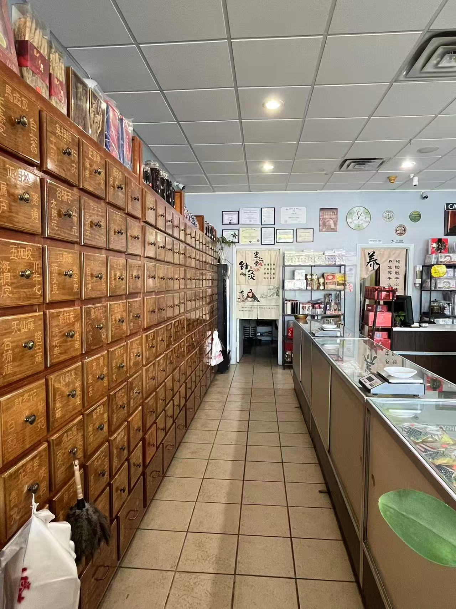
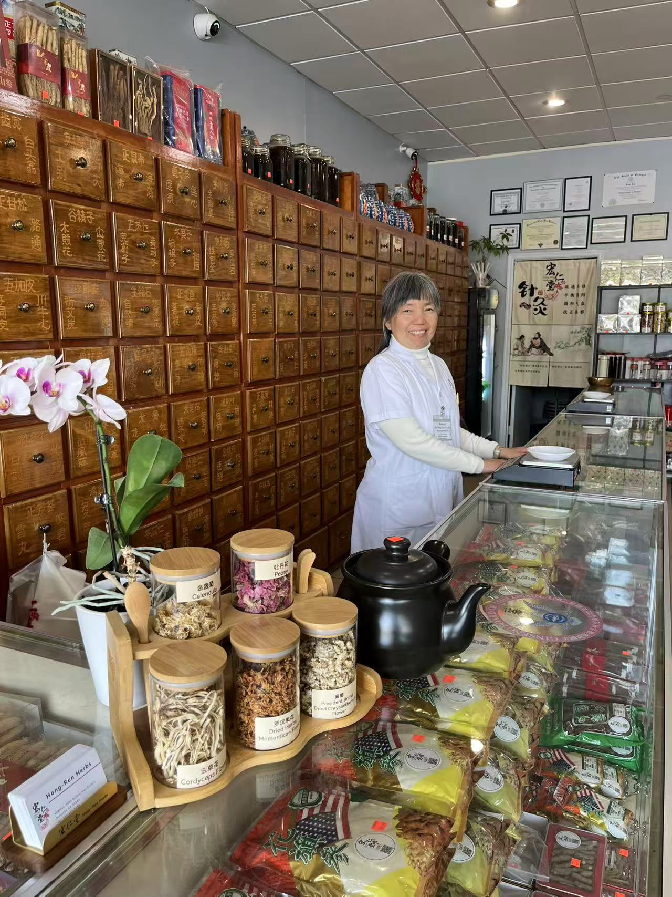

DORAVILLE, GEORGIA · SINCE 1985
Rooted in tradition.
Here for your
well-being.
Ginseng, traditional Chinese herbs, and acupuncture in Doraville. Visit Hung-Ren for personal service in English or Chinese.
仁
堂
Traditional herbs. Personal service.
Ginseng · Chinese herbs · Acupuncture

FROM OUR SHELVES
Explore our
ginseng & herbs.
Browse our ginseng and Chinese herbs, then call or visit to find out what’s available. We’re happy to answer questions about products, sizes, and prices.

ACUPUNCTURE & PERSONAL CARE
Care that starts
with listening.
Ling Liu, L.Ac., is a licensed acupuncturist who takes time to listen to each patient’s concerns and explain their care plan.
Ling Liu, L.Ac.
Licensed Acupuncturist · 刘凌 针灸师
Meet Ling LiuOUR STORY
A neighborhood tradition
since 1985.
Hung-Ren Ginseng & Herbs Inc has served the community since 1985. Visit our Doraville store for ginseng, traditional Chinese herbs, and herbal health products, with personal service in English and Chinese.
Come visit usWE’RE HERE TO HELP
Visit our
Doraville store.
Stop by to browse, call with a product question, or arrange an acupuncture appointment. We speak English and Chinese.
Call usSTORE HOURS
Open daily
10:00 AM–6:00 PM